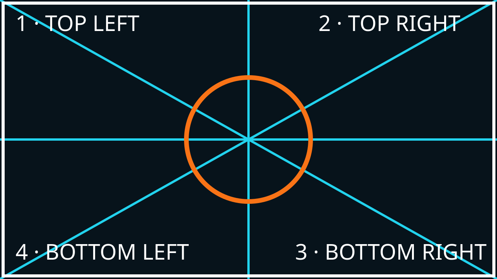

Rayality Mapping Pro is an open-source browser tool for placing images and looping videos onto physical surfaces. Start with local media; no account or AI key is needed.
Launch the editorConnect the projector as an extended display, rather than mirroring your laptop. Keep the projector still after alignment. A flat, light-colored surface and a dim room make the first calibration easier. The app uses a 1920 × 1080 logical canvas. Its output fits that canvas uniformly into the available window; a display with a different aspect ratio will have black bars.
Open the editor in desktop Chrome or Edge. Firefox and Safari may support the manual output tab, but have not been validated for this release. Keep one editor open per site: multiple editors share the same saved project and may overwrite each other.
In Layers, choose Add Quad and the 16:9 preset. Switch to Media, then choose Load Calibration Sample or upload a PNG, JPEG, GIF, WebP, SVG, MP4, WebM or Ogg video. Click the checkmark on its media card to assign it to the selected surface. The bundled calibration pattern was authored for this project and is MIT licensed.

The numbers help identify corner order when a surface is distorted. For a new installation, align the white frame first, then check whether the center circle looks right from the audience's viewing position. Mapping changes the image geometry; it does not compensate for focus, occlusion or a projector that has physically moved.
Drag the body of a selected surface to move it. Drag one of its four corner handles to align that corner to the object. Hold Shift while dragging a corner to scale around the center. The right-hand panel provides numeric X, Y, width and height controls. Avoid crossing the corners or collapsing the shape into a line: a perspective transform needs a valid quadrilateral.
Use separate surfaces for separate faces of an object. Lock finished surfaces to avoid moving them accidentally. Opacity and blend modes can soften overlap, but this is not a calibrated edge-blending system. Video crop and trim are available from the scissors button in Media.
Choose the projector button and Open Link Directly. Move the new output tab to the extended display and press F or double-click for fullscreen. B toggles blackout; H toggles the cursor. Keep the editor tab open. Geometry and media changes synchronize between same-origin tabs in the same browser profile; independent video playback clocks are not frame-locked.
The experimental Floating Window option requires Document Picture-in-Picture support in desktop Chromium. Fullscreen in that floating window is not guaranteed; use the manual tab for a full display. Output contains no advertisements, toolbars or selection handles. Hardware projection and operating-system display behavior still require a real rehearsal.
The status line reports automatic saves to this browser's IndexedDB. That is local storage, not a cloud backup. Clearing site data, changing browser profiles or moving to another domain can make it unavailable. Use Export Project to download a JSON file containing geometry and embedded media. Import Project restores that file after asking before replacing the current project.
Portable files are limited to 100 MB. Large videos increase memory use because JSON embeds them as base64. Keep originals separately and use short, compressed loops. A failed or unsupported import leaves the current project unchanged. Export before a show and test the file on the presentation computer.
核心流程不用帳號或 API key。AI 是選用的付費功能；按 Generate 會把提示與參考圖片送到 Google。這個版本尚未驗證付費 Veo 或實體投影設備。